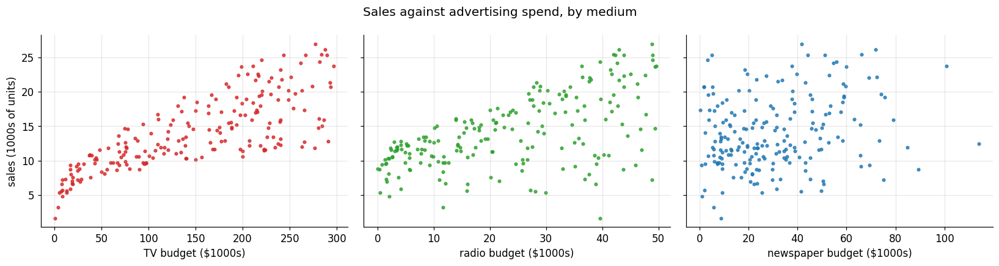
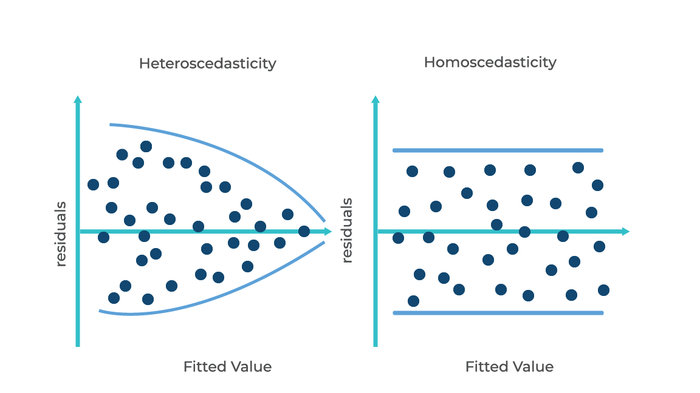
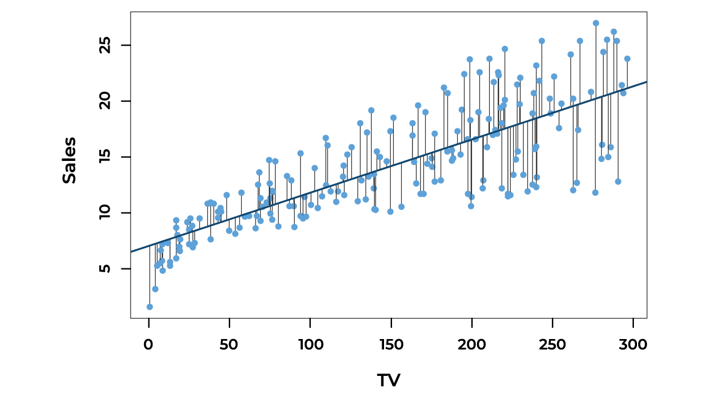
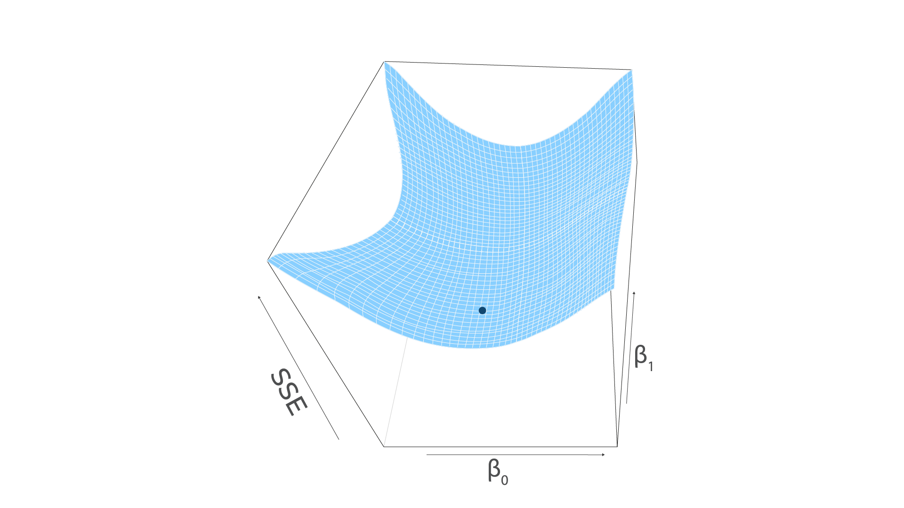
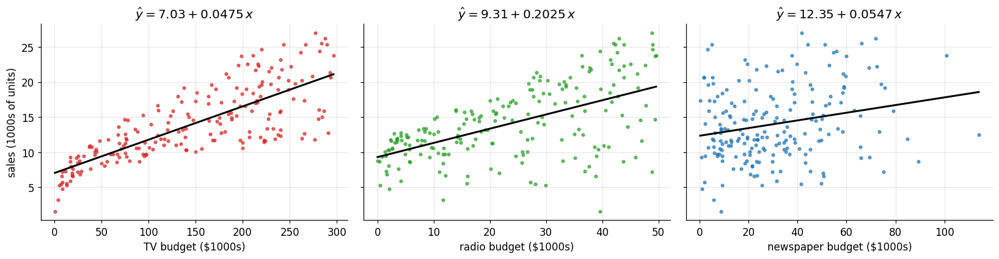
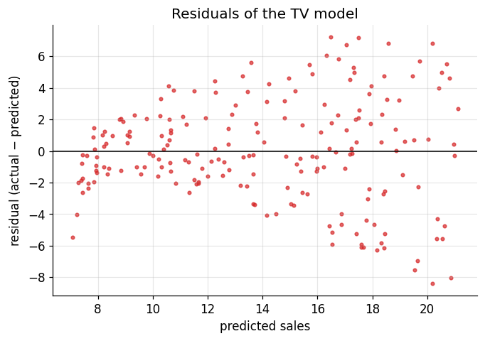
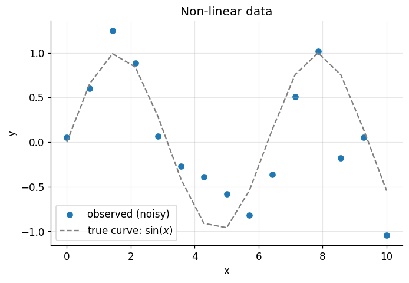
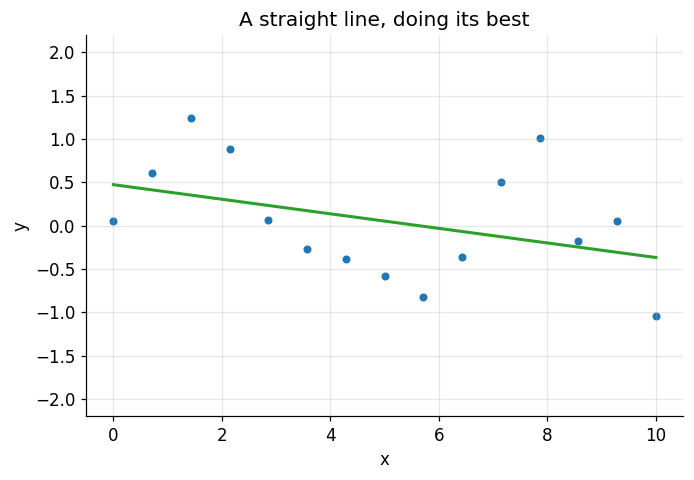
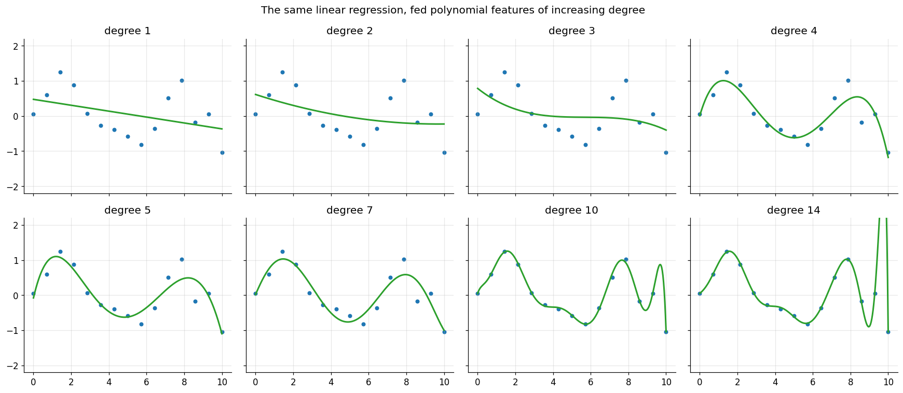
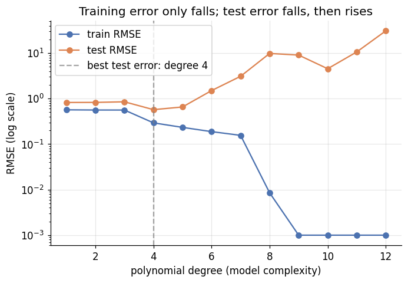

Regression: From a Straight Line to Polynomial Curves
DCS 404 · Data Science and Machine Learning
In the last module we walked the full CRISP-DM loop and, along the way, we casually dropped a
LinearRegression() into our modelling phase and let scikit-learn do its thing. It worked. But if I asked you
how it worked — how the machine actually chose that particular line out of the infinitely many lines it could
have drawn — you'd have to shrug. Today we fix that.
This module is where we open the hood on our first real algorithm. We'll take regression apart piece by piece: what the model equation actually says, what assumptions it quietly makes about your data, and — the centrepiece — the beautiful bit of calculus called Ordinary Least Squares that finds the best-fitting line. Then we'll implement it from scratch with nothing but NumPy, check that our hand-rolled version agrees with scikit-learn to the last decimal, and push beyond straight lines into polynomial regression, where we'll meet the most important tension in all of machine learning: underfitting versus overfitting.
Fair warning: there is more mathematics in this module than in the previous two. Don't let that scare you off. Every equation is followed by code that does the equation, and seeing the two side by side is exactly how the maths stops being symbols and starts being obvious.
Let's draw some lines.
How to work through this
Same rhythm as before: run every code cell (Shift + Enter), look at the output, then read my commentary
underneath. The cells build on each other in order, so if something errors, run from the top.
Two things specific to today. First, the derivation in Section 5 is the one place where I'll ask you to slow
down and follow the algebra line by line — it's maybe ten minutes of careful reading, and it's the ten minutes
that separates "I can call .fit()" from "I know what .fit() does". Second, this module uses the classic
Advertising dataset from the textbook An Introduction to Statistical Learning. I've bundled a copy in the
data/ folder next to this notebook, so everything runs offline.
As always, watch for the places where I stop and ask you to predict something before running the next cell. That tiny pause is where the learning happens.
Learning objectives
After completing this module you will be able to:
- Write down and interpret the model equations for simple, multiple, and polynomial regression.
- State the key assumptions of linear regression — linearity in parameters, constant error variance (homoscedasticity), no autocorrelation, no perfect multicollinearity, random sampling — and explain why each one matters.
- Derive the Ordinary Least Squares estimates of the intercept and slope by minimising the sum of squared errors.
- Implement OLS from scratch in NumPy and verify it against scikit-learn's
LinearRegression. - Fit and interpret a multiple linear regression, and explain why coefficients change when features are modelled together.
- Use
PolynomialFeaturesto fit non-linear relationships with a linear model. - Diagnose underfitting and overfitting by comparing training and test error as model complexity grows.
Setup
Run this once. It loads our libraries, sets the same plotting style we've used all course, and reads in the
Advertising dataset. If an import fails, install it with pip install <package>.
from pathlib import Path
import numpy as np
import pandas as pd
import matplotlib.pyplot as plt
import seaborn as sns
from sklearn.linear_model import LinearRegression
from sklearn.preprocessing import PolynomialFeatures
from sklearn.model_selection import train_test_split
from sklearn.metrics import mean_absolute_error, mean_squared_error, r2_score
# A consistent look for every plot in this notebook
plt.rcParams.update({
"figure.figsize": (7, 4.5),
"figure.dpi": 110,
"axes.grid": True,
"grid.alpha": 0.3,
"axes.spines.top": False,
"axes.spines.right": False,
"font.size": 11,
})
sns.set_palette("deep")
RANDOM_STATE = 0
# Load the Advertising dataset. We look in a couple of likely locations so this runs
# whether you launched Jupyter from the repo root or from inside the notebooks/ folder.
for candidate in [Path("data/Advertising.csv"),
Path("notebooks/data/Advertising.csv"),
Path("resources/dataset/Advertising.csv")]:
if candidate.exists():
ads = pd.read_csv(candidate, index_col=0)
print(f"Loaded dataset from: {candidate}")
break
else:
raise FileNotFoundError("Could not find Advertising.csv. Expected it in a data/ folder next to the notebook.")
print(f"Shape: {ads.shape[0]} markets, {ads.shape[1]} columns")
ads.head()
Loaded dataset from: data/Advertising.csv
Shape: 200 markets, 4 columns
| TV | radio | newspaper | sales | |
|---|---|---|---|---|
| 1 | 230.1 | 37.8 | 69.2 | 22.1 |
| 2 | 44.5 | 39.3 | 45.1 | 10.4 |
| 3 | 17.2 | 45.9 | 69.3 | 9.3 |
| 4 | 151.5 | 41.3 | 58.5 | 18.5 |
| 5 | 180.8 | 10.8 | 58.4 | 12.9 |
Each of the 200 rows is a market — think of it as a city where the company sells its product. For every market we know the advertising budget spent on TV, radio, and newspaper (each in thousands of dollars) and the resulting sales (in thousands of units). The business question writes itself: if I give you an advertising budget, how many units will we sell — and which medium is actually doing the work?
Notice how naturally this fits the CRISP-DM framing from last time. Business understanding: maximise sales by
spending the ad budget wisely. Data understanding: that's what we're about to do. And the target, sales, is a
continuous number — so this is a regression problem.
1. What a regression model actually is
Let's fix the vocabulary and notation we'll use for the rest of the course.
The data. We observe pairs of inputs and outputs. The input \(x\) goes by many names — feature, predictor, covariate, independent variable — and the output \(y\) by a few too — target, response, dependent variable. Pick your favourite; they all mean the same thing.
The goal. We want a function that turns inputs into a prediction of the output:
where \(\beta\) (the Greek letter beta) stands for the parameters — the numbers the machine must estimate from the data. Learning, in this chapter, literally means "finding good values of \(\beta\)".
The simplest choice of \(f\) is a straight line, which gives us simple linear regression — one input, two parameters:
Here \(\beta_0\) is the intercept (the predicted \(y\) when \(x = 0\)) and \(\beta_1\) is the slope (how much \(y\) changes when \(x\) increases by one unit). With several inputs we get multiple linear regression:
where \(d\) is the number of features — for our dataset, \(d = 3\) (TV, radio, newspaper).
One subtlety that trips people up, so let's nail it now: a regression method is called linear if the prediction is a linear function of the parameters \(\beta\) — not necessarily of the inputs \(x\). Keep that in your back pocket; it's the loophole that makes polynomial regression possible later, and it shows up as the very first assumption in the next section.
2. First look: does a line even make sense?
Before fitting anything, we look. Always. One scatter plot of sales against each advertising medium tells us whether a straight-line relationship is even plausible.
fig, axes = plt.subplots(1, 3, figsize=(15, 4), sharey=True)
for ax, medium, colour in zip(axes, ["TV", "radio", "newspaper"], ["tab:red", "tab:green", "tab:blue"]):
ax.scatter(ads[medium], ads["sales"], color=colour, marker=".", alpha=0.8)
ax.set_xlabel(f"{medium} budget ($1000s)")
axes[0].set_ylabel("sales (1000s of units)")
fig.suptitle("Sales against advertising spend, by medium")
plt.tight_layout()
plt.show()

Three plots, three different stories. Sales rise sharply and fairly consistently as TV spend increases — a line through that cloud would clearly capture something real. Radio shows an upward trend too, though the cloud is fatter. Newspaper, on the other hand, is close to a shapeless blob: whatever newspaper advertising is doing, it isn't much.
Keep these three pictures in mind. By the end of Section 8 we'll be able to say something precise — and genuinely surprising — about that newspaper panel.
3. The rules of the game: assumptions of linear regression
Every model is a bargain: it gives you predictive power in exchange for some assumptions about your data. If the assumptions hold, the estimates we derive below are provably excellent. If they're badly violated, the model will still happily produce numbers — they'll just quietly mean less than you think. So before we estimate anything, let's read the fine print.
3.1 The model must be linear in the parameters
The response \(y\) is a function of inputs \(x\) and parameters \(\beta\), and the linearity requirement applies to the \(\beta\)'s, not the \(x\)'s. Three examples make the boundary clear:
Linear in both inputs and parameters — obviously fine.
Not linear in the input (there's an \(x^2\)), but still linear in the parameters — so this is a legitimate linear regression model. Squaring \(x\) before fitting is just a feature transformation.
Linear in the input but not in the parameter (the \(\beta_1\) is squared) — this one violates the assumption and is not a linear regression model.
That middle example is the loophole I promised: transform the features however you like, keep the parameters linear, and all the machinery of this module still works. Polynomial regression, coming in Section 9, is exactly this trick.
3.2 Errors should have constant variance and no autocorrelation
No line passes through every point; there's always a leftover error (a residual) at each observation. The model assumes those errors have the same variance everywhere — a property with the intimidating name homoscedasticity. If instead the errors fan out as \(x\) grows (heteroscedasticity), the standard machinery can give misleading parameter estimates.

Fig: Homoscedastic errors (constant spread) versus heteroscedastic errors (spread that grows with $x$)The errors should also be independent of each other — knowing one residual should tell you nothing about the next. This "no autocorrelation" condition is most famously violated by time-series data, where each observation leans on the one before it. Our 200 markets are separate places, so we're on safe ground here.
3.3 No perfect multicollinearity
This one concerns the inputs: no feature should be an exact (or near-exact) combination of the others. The classic example: predicting house prices from length, breadth, and area. Since
the third feature adds no new information, and its perfect dependence on the others makes the parameter estimates unstable — mathematically, the feature matrix loses full rank and the estimation breaks down. The fix is simple: drop one of the redundant features.
In simple linear regression, with just one input, this assumption can't even be violated. With multiple inputs it's the first thing to check, and the check is one line of pandas:
# Correlations between the features (and the target, for good measure)
ads.corr().round(2)
| TV | radio | newspaper | sales | |
|---|---|---|---|---|
| TV | 1.00 | 0.05 | 0.06 | 0.78 |
| radio | 0.05 | 1.00 | 0.35 | 0.58 |
| newspaper | 0.06 | 0.35 | 1.00 | 0.23 |
| sales | 0.78 | 0.58 | 0.23 | 1.00 |
No feature pair is anywhere near perfectly correlated, so multiple regression is safe here. But file away one number from that table: radio and newspaper correlate at about 0.35. Markets that spend on radio tend to also spend on newspaper. That innocent-looking 0.35 is going to explain a mystery in Section 8.
3.4 Observations should be randomly sampled
The data should be a random sample from the population you care about. If you're modelling house prices for a city but only collected houses from the one convenient neighbourhood, no amount of clever estimation will fix that. And you need more observations than parameters — you can't pin down four unknowns with three data points.
3.5 So how do we actually find the parameters?
Assumptions read, bargain accepted. Now the real question: given 200 markets, what values of \(\beta_0\) and \(\beta_1\) should we pick? There are two classic families of answer:
- Least Squares Estimation — choose the parameters that minimise the sum of squared errors. This family includes Ordinary Least Squares (our topic), plus weighted and generalised variants for when the error assumptions above are violated.
- Maximum Likelihood Estimation — a probabilistic framing: choose the parameters that make the observed data most probable. A beautiful idea, and one you'll meet properly later in the course; for linear regression with normally distributed errors it actually lands on the same answer as least squares.
We'll take the least-squares road. It's the one scikit-learn drives on.
4. The best line: what "best" means
Look at the TV panel again, now with a fitted line drawn through it:

Fig: A regression line through the sales-vs-TV cloud. Each vertical segment is one residual.For each market \(i\), the line makes a prediction
(read \(\hat{y}\) as "y-hat" — the hat always means estimated). The actual observed value is
where \(\epsilon_i\) is the residual or error: the vertical distance between the point and the line, \(\epsilon_i = y_i - \hat{y}_i\). Some residuals are positive (point above the line), some negative (below), so if we just summed them, they'd cancel and a terrible line could score zero. The standard fix: square each residual before adding. That gives the Sum of Squared Errors (also called the Residual Sum of Squares):
Read this as a machine: feed in a candidate \((\beta_0, \beta_1)\), get out one number measuring how badly that line fits. In machine learning we call such a machine a loss function (or objective function). "Best line" now has a precise meaning — the \((\beta_0, \beta_1)\) that makes SSE as small as possible. This principle is Ordinary Least Squares (OLS).
Here's the stroke of luck that makes everything tractable: because SSE is a sum of squares, plotting it against the two parameters gives a smooth bowl — a convex surface with exactly one lowest point.

Fig: The SSE loss surface is a convex bowl — one minimum, no false bottoms.And calculus tells us exactly how to find the bottom of a bowl: the slope there is zero. So we take the partial derivative of SSE with respect to each parameter, set both to zero, and solve. Two equations, two unknowns. Let's do it.
5. The derivation: ten minutes of honest calculus
This is the slow-down section. Nothing here is beyond first-year calculus — the power rule, the chain rule, and the fact that the derivative of a sum is the sum of the derivatives. To reduce clutter I'll drop the summation index; every \(\sum\) below runs over the \(n\) samples, \(i = 1\) to \(n\).
5.1 Partial derivative with respect to \(\beta_0\)
(The power rule brings the 2 down; the chain rule contributes the \(-1\), the derivative of the inside with respect to \(\beta_0\).)
5.2 Partial derivative with respect to \(\beta_1\)
Same moves, except the chain rule now contributes \(-x_i\), because \(\beta_1\) is multiplied by \(x_i\):
5.3 Set both to zero and solve
From equation (1): divide both sides by \(-2\) and push the sum through the bracket:
(Summing the constant \(\beta_0\) over \(n\) samples gives \(n\beta_0\); \(\beta_1\) slides outside its sum.) Isolate \(\beta_0\) and divide by \(n\) — and recognise that a sum divided by \(n\) is just a mean:
Lovely — but useless on its own, since it contains the still-unknown \(\beta_1\). So we substitute it into the second equation.
From equation (2): divide by \(-2\), substitute \(\beta_0 = \bar{y} - \beta_1\bar{x}\), and group like terms:
Push the sum through, slide \(\beta_1\) out, and rearrange:
That's a perfectly correct answer, but you'll almost never see it written that way. A short algebraic fact — that \(\sum(y_i - \bar{y}) = 0\) and \(\sum(x_i - \bar{x}) = 0\), so subtracting \(\bar{x}\) inside the left factor changes nothing — lets us rewrite it in the symmetric form every textbook uses. (Try proving the equivalence yourself: expand \(\sum(x_i-\bar{x})(y_i-\bar{y})\) and watch the extra term vanish.)
5.4 The result
Putting hats on to mark them as estimates:
Pause and admire what just happened. We asked "which of the infinitely many lines minimises the squared error?" and calculus handed back a formula — compute \(\hat{\beta}_1\) from means and deviations, substitute to get \(\hat{\beta}_0\), done. No searching, no iterating. (Enjoy it while it lasts: for most models later in the course no closed-form solution exists, and we'll have to walk downhill step by step — that's gradient descent, a story for another module.)
6. OLS from scratch
Formulas are one thing; code you wrote yourself is belief. The two boxed equations translate into about four lines of NumPy.
def ols_fit(x, y):
"""Estimate simple linear regression parameters by Ordinary Least Squares.
Implements: b1 = sum((x - x_mean)(y - y_mean)) / sum((x - x_mean)^2)
b0 = y_mean - b1 * x_mean
"""
x_mean, y_mean = x.mean(), y.mean()
b1 = ((x - x_mean) * (y - y_mean)).sum() / ((x - x_mean) ** 2).sum()
b0 = y_mean - b1 * x_mean
return b0, b1
b0_tv, b1_tv = ols_fit(ads["TV"], ads["sales"])
print(f"TV model: sales = {b0_tv:.4f} + {b1_tv:.4f} x TV")
TV model: sales = 7.0326 + 0.0475 x TV
Two numbers, straight from the formulas. And they mean something concrete: with zero TV spend we'd expect to sell about 7,030 units (\(\hat{\beta}_0 \approx 7.03\), in thousands), and every extra $1,000 of TV advertising buys roughly 47.5 more units sold (\(\hat{\beta}_1 \approx 0.0475\)).
Let's fit all three mediums and draw the lines we've earned.
fig, axes = plt.subplots(1, 3, figsize=(15, 4), sharey=True)
for ax, medium, colour in zip(axes, ["TV", "radio", "newspaper"], ["tab:red", "tab:green", "tab:blue"]):
b0, b1 = ols_fit(ads[medium], ads["sales"])
ax.scatter(ads[medium], ads["sales"], color=colour, marker=".", alpha=0.7)
xs = np.linspace(ads[medium].min(), ads[medium].max(), 100)
ax.plot(xs, b0 + b1 * xs, color="black", linewidth=2)
ax.set_xlabel(f"{medium} budget ($1000s)")
ax.set_title(f"$\\hat{{y}} = {b0:.2f} + {b1:.4f}\\,x$")
axes[0].set_ylabel("sales (1000s of units)")
plt.tight_layout()
plt.show()

Three simple regressions, one per medium, each fitted with nothing but our four-line function:
- TV: \(\hat{\beta}_0 \approx 7.03\), \(\hat{\beta}_1 \approx 0.048\). A tight fit — the line genuinely summarises the cloud.
- Radio: \(\hat{\beta}_0 \approx 9.31\), \(\hat{\beta}_1 \approx 0.20\). The steepest slope of the three: per $1,000 spent, radio is associated with about 200 extra units. But look at the scatter around the line — much noisier than TV.
- Newspaper: \(\hat{\beta}_0 \approx 12.35\), \(\hat{\beta}_1 \approx 0.055\). A positive slope, so taken alone, newspaper spending does look mildly useful. Hold that thought until Section 8.
One more picture before we move on. In Section 3 we assumed errors have constant variance — and this is our first chance to actually check an assumption instead of just reciting it. A residual plot (residuals against predicted values) makes the check visual: if the assumption holds, we should see a formless horizontal band.
y_hat = b0_tv + b1_tv * ads["TV"]
residuals = ads["sales"] - y_hat
plt.scatter(y_hat, residuals, color="tab:red", marker=".", alpha=0.7)
plt.axhline(0, color="black", linewidth=1)
plt.xlabel("predicted sales")
plt.ylabel("residual (actual $-$ predicted)")
plt.title("Residuals of the TV model")
plt.show()

Interesting — not quite the formless band we hoped for. The residuals are pinched together at the left and fan out to the right: the model's errors are larger in high-spend markets. That's mild heteroscedasticity, live and in the wild, exactly the pattern from the right-hand panel of the figure in Section 3.2. It isn't severe enough to sink our analysis, but a careful statistician would note it — and this is precisely why we state assumptions up front: so we know what to go and check.
7. Sanity check: does scikit-learn agree?
Whenever you implement an algorithm by hand, verify it against a trusted implementation. If the numbers match, you've almost certainly understood the algorithm; if they don't, you've found a bug or a misunderstanding — either way, you learn something.
sk_model = LinearRegression()
sk_model.fit(ads[["TV"]], ads["sales"])
print(" our OLS scikit-learn")
print(f"intercept {b0_tv:.6f} {sk_model.intercept_:.6f}")
print(f"slope {b1_tv:.6f} {sk_model.coef_[0]:.6f}")
our OLS scikit-learn
intercept 7.032594 7.032594
slope 0.047537 0.047537
Identical, to the last decimal. That's because LinearRegression is Ordinary Least Squares — the same
minimise-the-squared-error principle, solved by efficient linear algebra rather than our explicit formula.
Every time you've called .fit() on a linear model, this is what was happening inside. It isn't magic; it's
Section 5.
8. Multiple linear regression: the mediums, together
Three separate simple regressions is three separate half-truths: each one credits its own medium with all the sales, ignoring whatever the other two budgets were doing in the same market. The honest model considers them together:
Each coefficient now answers a sharper question: how much do sales change per extra $1,000 on this medium, holding the other two fixed? The OLS principle is unchanged — minimise the SSE — only now the bowl lives in four dimensions and the closed-form solution comes from matrix algebra (the elegant \(\hat{\boldsymbol\beta} = (\mathbf{X}^\top\mathbf{X})^{-1}\mathbf{X}^\top\mathbf{y}\), for the curious). We'll let scikit-learn handle that part and keep our energy for interpreting the result.
And because we now know better than to grade a model on its own training data — that was a headline lesson of the workflow module — we'll split off a test set first.
X = ads[["TV", "radio", "newspaper"]]
y = ads["sales"]
X_train, X_test, y_train, y_test = train_test_split(X, y, test_size=0.2, random_state=RANDOM_STATE)
multi = LinearRegression()
multi.fit(X_train, y_train)
coefs = pd.DataFrame({"coefficient": multi.coef_}, index=X.columns)
print(f"intercept: {multi.intercept_:.3f}")
coefs.round(4)
intercept: 2.995
| coefficient | |
|---|---|
| TV | 0.0446 |
| radio | 0.1965 |
| newspaper | -0.0028 |
Read the newspaper row twice. In its simple regression (Section 6), newspaper had a healthy positive slope of about \(0.055\). Modelled together with TV and radio, its coefficient collapses to roughly zero — the model is telling us that once you know a market's TV and radio budgets, the newspaper budget adds essentially nothing.
So why did newspaper look useful on its own? Remember the correlation of about 0.35 between radio and newspaper we filed away in Section 3.3. Markets that spend on radio also tend to spend on newspaper. Radio genuinely drives sales; newspaper just tags along, basking in radio's reflected glory. The simple regression couldn't tell the difference — the multiple regression can, and that ability to hold other variables fixed is exactly why we bother with it. (This is also multicollinearity's gentler cousin in action: the features aren't correlated enough to break the model, just enough to fool one-variable-at-a-time analysis.)
Does modelling the mediums together actually predict better? Let's score both models on the held-out test set, with the same metrics we met last module.
# Simple model: TV only, fitted on the same training split for a fair fight
simple = LinearRegression().fit(X_train[["TV"]], y_train)
results = {}
for name, model, feats in [("TV only", simple, ["TV"]),
("TV + radio + newspaper", multi, list(X.columns))]:
pred = model.predict(X_test[feats])
results[name] = {
"MAE": mean_absolute_error(y_test, pred),
"RMSE": np.sqrt(mean_squared_error(y_test, pred)),
"R^2": r2_score(y_test, pred),
}
pd.DataFrame(results).T.round(3)
| MAE | RMSE | R^2 | |
|---|---|---|---|
| TV only | 2.505 | 3.192 | 0.676 |
| TV + radio + newspaper | 1.362 | 2.098 | 0.860 |
No contest. The multiple regression cuts the TV-only model's MAE nearly in half (2.5 down to 1.4) and lifts \(R^2\) from 0.68 to 0.86 — the three budgets together explain about 86% of the variation in sales across markets. Not bad for a model whose entire brain is four numbers.
The business translation writes itself: put marginal budget into radio and TV, and stop paying for newspaper ads. That is a finding someone will pay for, and it took a 200-row CSV and a model from the 1800s.
9. When a straight line isn't enough: polynomial regression
Everything so far assumed the truth is a line (or a plane). The real world often disagrees — growth curves saturate, trajectories arc, seasons oscillate. Time to cash in the loophole from Section 3.1.
A polynomial of degree two in \(x\) is
Look closely: it's not linear in \(x\) (there's an \(x^2\)), but it is linear in the parameters — each \(\beta\) enters plainly, no squares, no products of betas. So here's the trick: treat \(x^2\) as just another feature. Manufacture a new column equal to \(x^2\), hand the model two input columns instead of one, and fit an ordinary linear regression. Every drop of machinery from Sections 4–7 applies unchanged. This is polynomial regression: new features, same algorithm.
With several original features the transformation also creates cross-terms. Two features \(x_1, x_2\) at degree two become \(1,\ x_1,\ x_2,\ x_1 x_2,\ x_1^2,\ x_2^2\) — giving the model
Scikit-learn packages the manufacturing step as
PolynomialFeatures.
To watch it work, we'll manufacture a dataset where we know the truth: points from a sine curve plus random noise, mimicking real measurements (imperfect instruments, calibration error, plain bad luck). Because we know the true curve, we can judge exactly how well each model recovers it — a luxury real data never grants.
X_FROM, X_TO, N_POINTS = 0, 10, 15
rng = np.random.default_rng(RANDOM_STATE)
x_poly = np.linspace(X_FROM, X_TO, N_POINTS)
y_true = np.sin(x_poly) # the hidden truth
y_poly = y_true + rng.normal(scale=0.4, size=N_POINTS) # what we actually observe
X_poly = x_poly.reshape(-1, 1) # sklearn expects a 2-D feature array
plt.scatter(x_poly, y_poly, color="tab:blue", label="observed (noisy)")
plt.plot(x_poly, y_true, color="grey", linestyle="--", label="true curve: $\\sin(x)$")
plt.xlabel("x")
plt.ylabel("y")
plt.title("Non-linear data")
plt.legend()
plt.show()

Before running the next cell, predict: what will a plain straight-line fit do with this?
def plot_fit(model, transformer=None, ax=None, title=None):
"""Scatter the data and draw a model's prediction curve over a fine grid."""
ax = ax or plt.gca()
grid = np.linspace(X_FROM, X_TO, 300).reshape(-1, 1)
grid_features = transformer.transform(grid) if transformer else grid
ax.scatter(x_poly, y_poly, color="tab:blue", s=18)
ax.plot(grid, model.predict(grid_features), color="tab:green", linewidth=2)
ax.set_ylim(-2.2, 2.2)
if title:
ax.set_title(title)
straight = LinearRegression().fit(X_poly, y_poly)
plot_fit(straight, title="A straight line, doing its best")
plt.xlabel("x")
plt.ylabel("y")
plt.show()

About as useful as you guessed. The line has no vocabulary for waves — no setting of two parameters can bend it. The model isn't badly trained; it's badly chosen. Its family of possible shapes simply doesn't contain anything resembling the data. We say such a model underfits.
So let's grow the family. Same LinearRegression, but fed polynomial features of increasing degree:
degrees = [1, 2, 3, 4, 5, 7, 10, 14]
fig, axes = plt.subplots(2, 4, figsize=(16, 7), sharex=True, sharey=True)
poly_models = {}
for ax, degree in zip(axes.ravel(), degrees):
transformer = PolynomialFeatures(degree=degree)
X_transformed = transformer.fit_transform(X_poly) # manufacture x, x^2, ..., x^degree
model = LinearRegression().fit(X_transformed, y_poly)
poly_models[degree] = (model, transformer)
plot_fit(model, transformer, ax=ax, title=f"degree {degree}")
fig.suptitle("The same linear regression, fed polynomial features of increasing degree")
plt.tight_layout()
plt.show()

Watch the story unfold left to right, top to bottom:
- Degrees 1–3 can't bend enough — still underfitting. (Degree 3 manages a half-hearted S-curve, but a sine wave needs more.)
- Degrees 4–5 find the wave. These are honest approximations of the true sine curve.
- Degrees 7–14 have capacity to spare, and they spend it on exactly the wrong thing: chasing individual noisy points. By degree 14 the curve has 15 parameters — one for each of our 15 observations — so it can thread through every single point, wiggling frantically and snaking far away from the true curve in between.
Here's the trap in that picture: measured on the training points, degree 14 has the lowest error of all eight models — essentially zero. Every extra degree can only reduce training error, because a degree-\(n\) polynomial contains every polynomial below it. If training error were the judge, maximum wiggle would always win. But we know the truth here is a smooth sine wave — the extra wiggle is the model memorising noise, and it will backfire the moment we ask about a new \(x\). That failure mode is overfitting, and it is the single most important pathology in machine learning.
10. Underfitting, overfitting, and the U-shaped curve
We already own the right diagnostic tool — we built it into our workflow last module. Judge the model on data it hasn't seen. Let's split our 15 points into train and test (10 points to fit on, 5 held back as the exam), fit every degree from 1 to 12 on the training points only, and track both errors as complexity grows.
Xp_train, Xp_test, yp_train, yp_test = train_test_split(
X_poly, y_poly, test_size=0.3, random_state=RANDOM_STATE)
records = []
for degree in range(1, 13):
transformer = PolynomialFeatures(degree=degree)
model = LinearRegression().fit(transformer.fit_transform(Xp_train), yp_train)
rmse = lambda X_, y_: np.sqrt(mean_squared_error(y_, model.predict(transformer.transform(X_))))
records.append({"degree": degree,
"train RMSE": rmse(Xp_train, yp_train),
"test RMSE": rmse(Xp_test, yp_test)})
curve = pd.DataFrame(records).set_index("degree")
best_degree = curve["test RMSE"].idxmin()
# From degree 9 up, 10+ parameters fit 10 training points exactly, so train RMSE is
# essentially zero -- we clip it to keep the log-scale plot happy.
plt.plot(curve.index, curve["train RMSE"].clip(lower=1e-3), marker="o", label="train RMSE")
plt.plot(curve.index, curve["test RMSE"], marker="o", label="test RMSE")
plt.axvline(best_degree, color="grey", linestyle="--", alpha=0.7,
label=f"best test error: degree {best_degree}")
plt.yscale("log")
plt.xlabel("polynomial degree (model complexity)")
plt.ylabel("RMSE (log scale)")
plt.title("Training error only falls; test error falls, then rises")
plt.legend()
plt.show()
curve.round(3).head(10)

| train RMSE | test RMSE | |
|---|---|---|
| degree | ||
| 1 | 0.567 | 0.822 |
| 2 | 0.561 | 0.825 |
| 3 | 0.561 | 0.851 |
| 4 | 0.293 | 0.572 |
| 5 | 0.233 | 0.655 |
| 6 | 0.188 | 1.499 |
| 7 | 0.156 | 3.089 |
| 8 | 0.009 | 9.819 |
| 9 | 0.000 | 9.033 |
| 10 | 0.000 | 4.533 |
This picture is worth the whole module — arguably the whole course. Two curves, two completely different stories:
- Training error (blue) only goes down. More complexity always helps the model flatter itself — and from degree 9 it hits rock bottom at essentially zero, because a model with ten parameters can thread ten training points exactly. Perfect memorisation.
- Test error (orange) traces a U-shape: it falls while added complexity captures real structure, bottoms out at a modest degree, then climbs — sometimes explosively — as the model starts memorising noise.
The vocabulary, one more time, now with pictures attached:
- Underfitting (left of the U): the model is too simple to capture the real pattern. Both training and test error are high. Remedy: more capacity, better features.
- Overfitting (right of the U): the model is so flexible it learns the noise. Training error is superb, test error is terrible — and the gap between the two curves is your warning light.
- Generalisation (the bottom of the U): the actual goal. Not the model that best fits the data you have, but the one that will best fit the data you don't have yet.
Every model family you'll meet from here on — decision trees, random forests, neural networks — has its own complexity dial, and every one of them traces this same U. The names change; the trade-off never does.
11. Your turn
Add cells below each exercise and have a go. The first two are quick; the last three are where the ideas get into your fingers.
Exercise 1 — Radio, by hand.
Use our ols_fit function on radio vs sales, then verify the two parameters against scikit-learn's
LinearRegression, as we did for TV in Section 7. Write the fitted equation in a markdown cell.
Exercise 2 — Spend the money. Using the multiple regression from Section 8: predict sales for a market with a $100k TV budget, $30k radio budget, and $20k newspaper budget (mind the units — budgets are in thousands). According to the model, which single medium gives the most extra sales per additional $1,000?
Exercise 3 — Break the assumptions on purpose.
Add a fake feature total = TV + radio + newspaper to the multiple regression from Section 8 and refit. What
happens to the coefficients? Which assumption from Section 3 did you just violate?
Exercise 4 — Back to the students.
Load last module's data/student-mat.csv (remember sep=";") and fit a simple linear regression of G3 on
G1 from scratch with ols_fit. Plot the data with the fitted line and interpret both parameters in plain
English: what does the slope say about first-period versus final grades?
Exercise 5 — Move the U.
In Section 10, change the noise level (scale=0.4) to 0.1 and rerun, then to 0.8 and rerun. Watch where
the best-test-error degree lands each time. What does noise do to the amount of model complexity you can
afford? Try changing N_POINTS from 15 to 100 as well — does more data let you get away with higher degrees?
12. If you remember nothing else
-
A regression model is a function \(y \approx f(x, \beta)\), and "learning" means estimating the parameters \(\beta\) from data. "Linear" means linear in the parameters — the features themselves are fair game for transformation.
-
Linear regression comes with assumptions: linearity in parameters, constant error variance (homoscedasticity), no autocorrelation, no perfect multicollinearity, random sampling. State them, then check them — a residual plot is the five-second check for the variance one.
-
Ordinary Least Squares defines "best line" as the one minimising the sum of squared errors, and because that loss is a convex bowl, calculus yields closed-form solutions: \(\hat{\beta}_1 = \frac{\sum(x_i-\bar{x})(y_i-\bar{y})}{\sum(x_i-\bar{x})^2}\) and \(\hat{\beta}_0 = \bar{y} - \hat{\beta}_1\bar{x}\).
-
Scikit-learn's
LinearRegressionis exactly this. You've now written it yourself and matched it to six decimal places —.fit()is no longer a black box. -
Multiple regression coefficients answer "holding everything else fixed" — which is why newspaper's effect evaporated once radio was in the room. Correlated features make one-variable-at-a-time analysis lie.
-
Polynomial regression is linear regression fed manufactured features (\(x^2, x^3, \dots\)). New features, same algorithm.
-
Training error only ever falls as complexity grows; test error traces a U. Underfitting on the left, overfitting on the right, generalisation at the bottom. Judge models only on data they haven't seen.
-
Every model family you'll ever meet has a complexity dial and the same U-shaped trade-off waiting for you.
13. Further reading and glossary
Further reading
- An Introduction to Statistical Learning, Chapter 3 — the definitive gentle treatment of linear regression, and the home of our Advertising dataset.
- MIT's lecture notes on simple linear regression — Section 3.1 walks the same least-squares derivation with additional statistical detail.
- scikit-learn's
LinearRegressionandPolynomialFeaturesdocumentation — the practical references for everything we used today. - The scikit-learn worked example on underfitting vs. overfitting — the same experiment as our Section 10, with cross-validation added.
Glossary
| Term | Meaning |
|---|---|
| Regression | Predicting a continuous numeric target from input features. |
| Parameter / coefficient (\(\beta\)) | A number the model learns from data; in linear regression, an intercept and one slope per feature. |
| Intercept (\(\beta_0\)) | Predicted value of \(y\) when all features are zero. |
| Slope (\(\beta_1\)) | Change in predicted \(y\) per one-unit increase in a feature (others held fixed). |
| Residual / error (\(\epsilon\)) | Difference between an observed value and the model's prediction, \(y_i - \hat{y}_i\). |
| SSE / RSS | Sum of squared errors — the loss function OLS minimises. |
| Ordinary Least Squares (OLS) | Estimating parameters by minimising the SSE; has a closed-form solution. |
| Convex function | A bowl-shaped function with a single minimum — no false bottoms for optimisation to get stuck in. |
| Homoscedasticity | Errors have constant variance across all observations; its violation is heteroscedasticity. |
| Autocorrelation | Correlation between errors of different observations (common in time series). |
| Multicollinearity | One feature being an (almost) exact combination of others, destabilising the estimates. |
| Multiple linear regression | Linear regression with several input features. |
| Polynomial regression | Linear regression on manufactured polynomial features (\(x^2\), \(x^3\), cross-terms, …). |
| Underfitting | Model too simple to capture the real pattern — high error on train and test. |
| Overfitting | Model so flexible it memorises noise — low training error, high test error. |
| Generalisation | Performing well on unseen data; the actual goal of machine learning. |